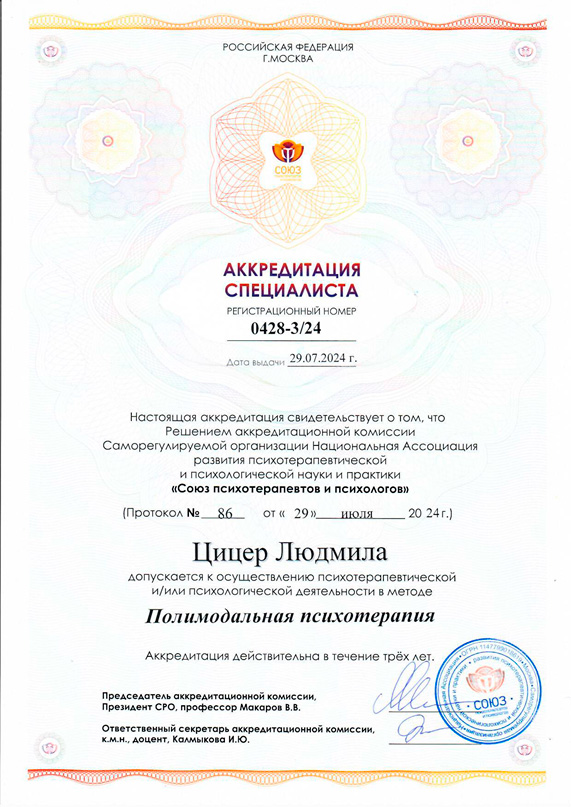
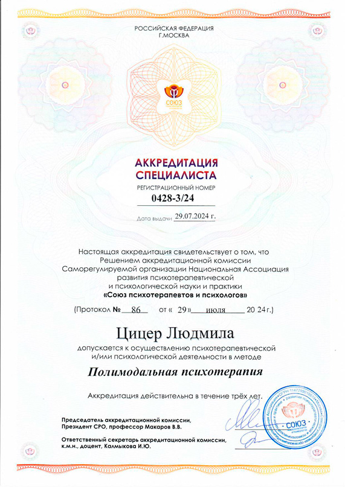

Об авторе
Людмила Цицер — автор метода «Научитесь понимать свои сны». Исследует практики осмысленного отношения к сновидениям и их применению в личной жизни.
Уникальный Метод Работы со Сновидениями
Нажми — откроется плеер и запустится первый ролик из раздела «Видео об авторе».

 
